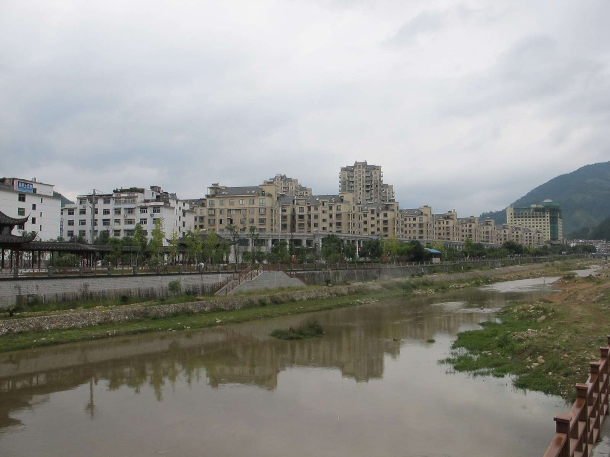

Station

Berge bestimmen die Wege
Text mitlesen
Wenn wir von Shànghǎi nach Jǐngníng fahren, verändert sich die Landschaft grundlegend. Aus der dicht besiedelten Ebene gelangen wir in eine Welt aus bewaldeten Bergen, schmalen Tälern und Dörfern an steilen Hängen. Um zu verstehen, wo wir unterwegs sind, lohnt sich zuerst ein Blick auf die größere Landkarte.
Unser Ziel liegt in der Provinz Zhèjiāng an Chinas Südostküste. Ihre Hauptstadt ist Hángzhōu. Im Norden grenzt die Provinz an Shànghǎi und Jiāngsū, im Süden an Fújiàn. Wer Zhèjiāng mit großen Städten, Handel und Industrie verbindet, kennt allerdings nur einen Teil der Region. Die Landschaft steigt vom flacheren Nordosten zum bergigen Südwesten an. Zwischen den Ebenen, der Küste und den Bergen liegen sehr unterschiedliche Lebensräume. Unsere Reise führt in diesen gebirgigen Südwesten.
Dort liegt Líshuǐ. Der Name bezeichnet sowohl eine Stadt als auch ein viel größeres Verwaltungsgebiet, zu dem Jǐngníng gehört. Wenn wir am Bahnhof in Líshuǐ ankommen, sind wir also im städtischen Zentrum dieser Region. Die Weiterfahrt führt uns in einen ihrer Kreise. Diese Unterscheidung ist hilfreich: Auf einer chinesischen Karte kann der Name einer Stadt zugleich für eine ausgedehnte Landschaft mit weiteren Städten, Gemeinden und vielen Dörfern stehen.
Jǐngníng liegt nahe der Grenze zu Fújiàn und umfasst ungefähr neunzehnhundertfünfzig Quadratkilometer. Große Teile gehören zur Berglandschaft des Dònggōng-Gebirges. Eine örtliche Formel beschreibt die Verhältnisse so: neun Teile Berge, ein halber Teil Wasser und ein halber Teil Ackerland. Das ist ein einprägsames Bild. Es sagt vor allem: Ebene Flächen sind kostbar. Wo ein Tal etwas breiter wird, müssen sich Häuser, Straßen und Landwirtschaft den verfügbaren Raum teilen.
Ein wichtiger Fluss ist der Xiǎoxī. Sein Name bedeutet wörtlich kleiner Bach, doch er gehört zum großen Gewässersystem des Ōujiāng. Zahlreiche Seitenbäche sammeln das Wasser aus den Bergen. Diese Gewässer gliedern die Landschaft und verbinden ihre Täler. Zugleich können sie Wege unterbrechen. Deshalb haben Brücken hier eine besondere Bedeutung. Ein Übergang entscheidet darüber, ob Menschen ihre Felder, den nächsten Markt oder ein Nachbardorf erreichen können.
Auch die Stadt Jǐngníng lässt sich von dieser Landschaft her verstehen. Ihr älterer Kern liegt in einem schmalen, von Bergen eingefassten Talbecken am Hèxī, einem Zufluss des Xiǎoxī. Die heutige Kreisstadt ist der zentrale Ort für Verwaltung, Handel und Dienstleistungen. Sie ist in den vergangenen Jahrzehnten deutlich gewachsen. Zum älteren Zentrum kamen neue Wohngebiete und öffentliche Einrichtungen. Wer später durch ein kleines Bergdorf geht, sieht also einen anderen Ausschnitt desselben Kreises als beim Spaziergang durch die Stadt.
Als eigener Kreis wurde Jǐngníng bereits im Jahr vierzehnhundertzweiundfünfzig eingerichtet, während der Míng-Dynastie. Der heutige Status als autonomer Kreis der Shē geht auf neunzehnhundertvierundachtzig zurück. Jǐngníng ist der einzige autonome Kreis Chinas, der den Namen dieser Bevölkerungsgruppe trägt. Hier leben Shē und Angehörige der Hàn-Bevölkerung zusammen. Zur regionalen Geschichte gehören deshalb sowohl eigene Traditionen als auch lange Beziehungen zwischen Nachbarn. Mehr über den besonderen Verwaltungsstatus hört ihr in der nächsten Station.
Das Klima ist feucht und vom Monsun geprägt. Die Höhenunterschiede sorgen dafür, dass es oben in den Bergen kühler sein kann als unten im Tal. Reichlicher Regen bedeutet dabei nicht, dass Wasser jederzeit gleichmäßig zur Verfügung steht. Starkregen und trockenere Phasen gehören ebenfalls zu den Herausforderungen der Landwirtschaft. Für Menschen, die von ihren Feldern lebten, waren Wetter, Wasser und ein sicherer Weg zum nächsten Ort ganz unmittelbare Lebensfragen.
Heute gehören Tee und andere landwirtschaftliche Erzeugnisse zu den wichtigen Produkten des Kreises. Besonders bekannt ist Huìmíng-Tee. Bei unserem Besuch in Dōngnòng begegnen wir einer Region, die Landwirtschaft auch mit Verarbeitung, Verkauf und Tourismus verbindet. Daneben verändern neue Straßen, Arbeitsmöglichkeiten und der Ausbau der Kreisstadt das Leben. Manche Familien wohnen heute näher an Schulen, Einkaufsmöglichkeiten und medizinischer Versorgung; andere bewirtschaften weiterhin Flächen in den Bergdörfern. Landschaft und Alltag bleiben eng miteinander verbunden.
Für unsere Exkursion können wir deshalb drei Dinge im Blick behalten: Wo findet ein Dorf Platz? Wie kommt man hinein und wieder hinaus? Und welche Orte bringen die Menschen zusammen? Eine überdachte Brücke, eine Ahnenhalle oder ein Tempel erzählen jeweils etwas über diese Fragen. In Xiōngdài und Lúcí werden wir ihnen wiederbegegnen. So wird aus einer schönen Berglandschaft nach und nach eine bewohnte und über viele Generationen gestaltete Region.